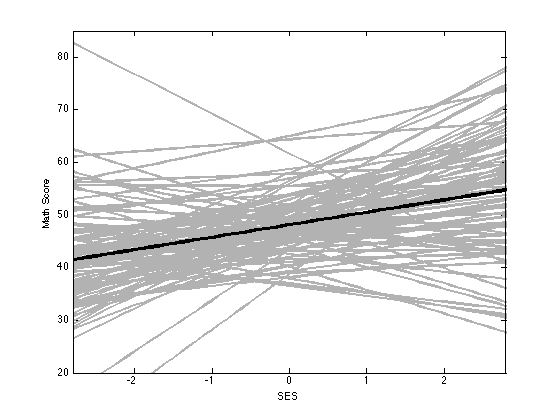
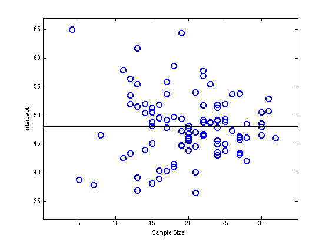
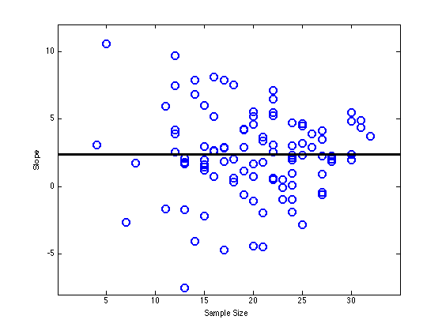
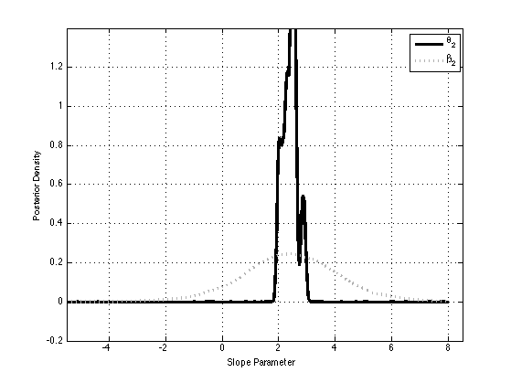
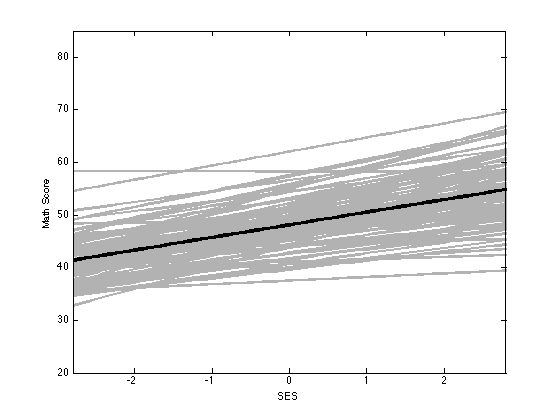

Contents
read math score data
plotFig = 1;
Y = importdata('mathDataHoff.csv');
y = Y.data;
names = Y.colheaders;
xvals = [-3:.1:3]';
sch = y(:,1);
sch_id = unique(sch);
score = y(:,4);
ses = y(:,3);
for i = 1:length(sch_id)
idx = find(sch==sch_id(i));
y = score(idx);
x = ses(idx);
x = (x - mean(x));
X = [ones(length(x),1) x];
beta(:,i) = X\y;
sampleSize(i) = length(idx);
XX(:,:,i) = X'*X;
Xy(:,i) = X'*y;
yj{i} = y;
Xj{i} = X;
sigma2hat(i) = var(y - X*beta(:,i));
end
beta_avg = mean(beta,2);
plot regression lines for each school
figure;
hold on
for i = 1:length(sch_id)
yvals = [ones(length(xvals),1) xvals]*beta(:,i);
plot(xvals, yvals, 'linewidth',2, 'color',[0.7 0.7 0.7])
end
yvals = [ones(length(xvals),1) xvals]*beta_avg;
plot(xvals, yvals, 'linewidth',3, 'color','k')
xlim([-2.8 2.8])
ylim([20 85])
set(gca, 'xtick',[-2:2],'ytick',[20:10:90]);
xlabel('SES');
ylabel('Math Score');
box on;
printPmtkFigure('multilevelLinRegOLS')

plot intercept vs samplesize
figure;
plot(sampleSize, beta(1,:),'o','linewidth',2,'markersize',10)
hold on
xvals = [-10:.1:40];
plot(xvals, beta_avg(1)*ones(length(xvals),1), 'linewidth',3, 'color','k')
xlabel('Sample Size');
ylabel('Intercept');
set(gca, 'xtick',[5:5:30],'ytick',[35:5:65]);
xlim([0 35]);
ylim([32 67]);
printPmtkFigure('multilevelLinRegInterceptVsN')

plot slope vs samplesize
figure;
plot(sampleSize, beta(2,:),'o','linewidth',2,'markersize',10)
hold on
xvals = [-10:.1:40];
plot(xvals, beta_avg(2)*ones(length(xvals),1), 'linewidth',3, 'color','k')
xlabel('Sample Size');
ylabel('Slope');
xlim([0 35]);
ylim([-8 12]);
set(gca, 'xtick',[5:5:30],'ytick',[-5:5:10]);
printPmtkFigure('multilevelLinRegSlopeVsN')

Gibbs
p = 2;
J = 100;
N = sum(sampleSize);
count = 1;
mu0 = beta_avg;
Lambda0 = cov(beta');
invLambda0 = inv(Lambda0);
S0 = Lambda0;
eta0 = p + 2;
nu0 = 1;
sigma02 = mean(sigma2hat);
theta = mvnrnd(mu0(:)', Lambda0)';
invSigma = wishrnd(inv(S0), eta0);
sigma2 = 1/gamrnd(0.5*(nu0 + N),1/0.5*(nu0*sigma02));
for k = 1:500
ssr = 0;
for j = 1:J
Vj = inv(invSigma + XX(:,:,j)/sigma2);
mj = Vj*(invSigma*theta + Xy(:,j)/sigma2);
beta(:,j) = mvnrnd(mj(:)', Vj)';
ssr = ssr + sum((yj{j} - Xj{j}*beta(:,j)).^2);
end
Lambda = inv(invLambda0 + J*invSigma);
mu = Lambda*(invLambda0*mu0 + J*invSigma*mean(beta,2));
theta = mvnrnd(mu(:)', Lambda)';
eta = eta0 + J;
diff = bsxfun(@minus, beta, theta);
invS = inv(S0 + diff*diff');
invSigma = wishrnd(invS, eta);
a = 0.5*(nu0 + N);
b = 1/(0.5*(nu0*sigma02 + ssr));
sigma2 = 1/gamrnd(a,b);
if ~mod(k,10)
theta_all(:,count) = theta;
beta_all(:,:,count) = beta;
invSigma_all(:,:,count) = invSigma;
sigma2_all(count) = sigma2;
count = count + 1;
end
end
beta2 = [];
for i = 1:count-1;
mean_ = theta_all(2,i);
Sigma = inv(invSigma_all(:,:,i));
sigma2_ = Sigma(2,2);
beta2 = [beta2; repmat(mean_,100,1) + sqrt(sigma2_)*randn(100,1)];
end
plot posterior distribution of beta2, and theta2
figure;
t = theta_all(2,:);
[bw, pdf_theta2, xvals] = kde(t, 1024, -6, 8);
h(1) = plot(xvals, pdf_theta2, 'color','k','linewidth',3);
hold on
t = beta2;
[bw, pdf_beta2, xvals] = kde(t, 1024, -6, 8);
h(2) = plot(xvals, pdf_beta2, ':', 'color', [0.7 0.7 0.7],'linewidth',3);
xlim([-5.5 8.5]);
ylim([-0.2 1.4]);
xlabel('Slope Parameter')
ylabel('Posterior Density')
legend(h, '\theta_2','\beta_2');
grid on;
printPmtkFigure('multilevelLinRegPost')

plot regression lines for each school
xvals = [-3:.1:3]';
figure;
hold on
for i = 1:length(sch_id)
beta = mean(squeeze(beta_all(:,i,:)),2);
yvals = [ones(length(xvals),1) xvals]*beta;
plot(xvals, yvals, 'linewidth',2, 'color',[0.7 0.7 0.7])
beta_i(:,i) = beta;
end
beta_avg = mean(beta_i,2);
yvals = [ones(length(xvals),1) xvals]*beta_avg;
plot(xvals, yvals, 'linewidth',3, 'color','k')
xlim([-2.8 2.8])
ylim([20 85])
set(gca, 'xtick',[-2:2],'ytick',[20:10:90]);
xlabel('SES');
ylabel('Math Score');
box on;
printPmtkFigure('multilevelLinRegPred')
